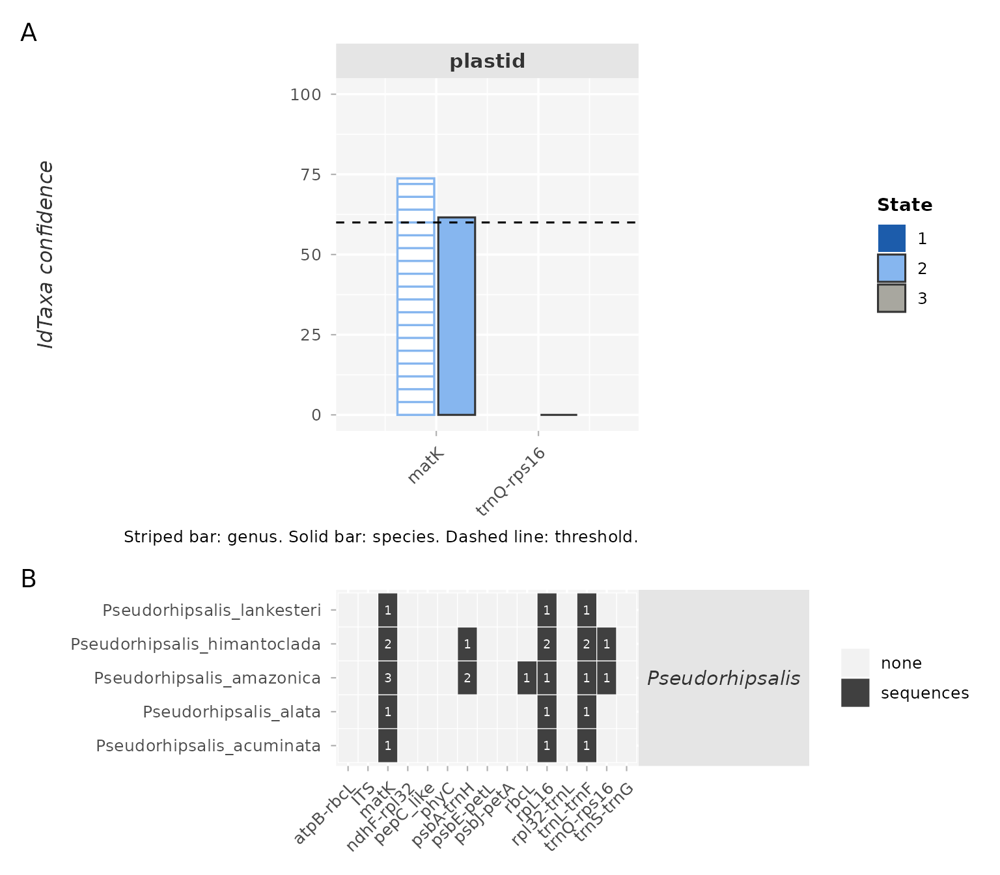
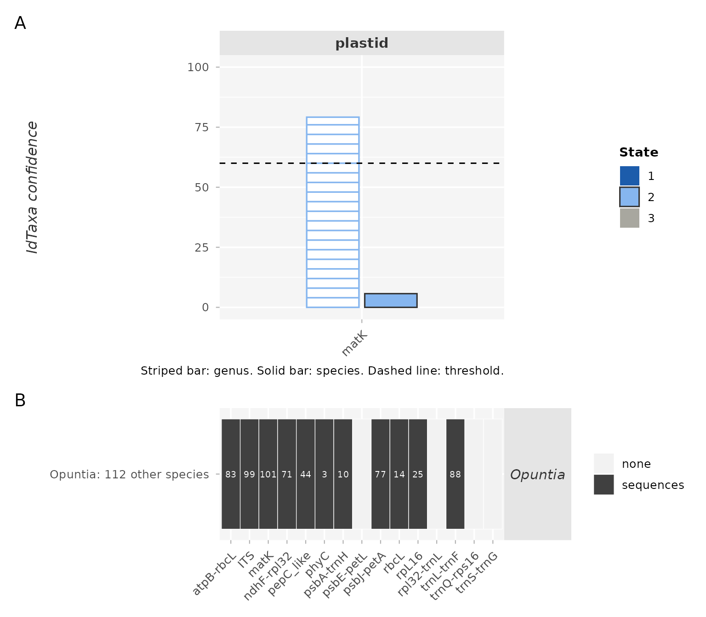
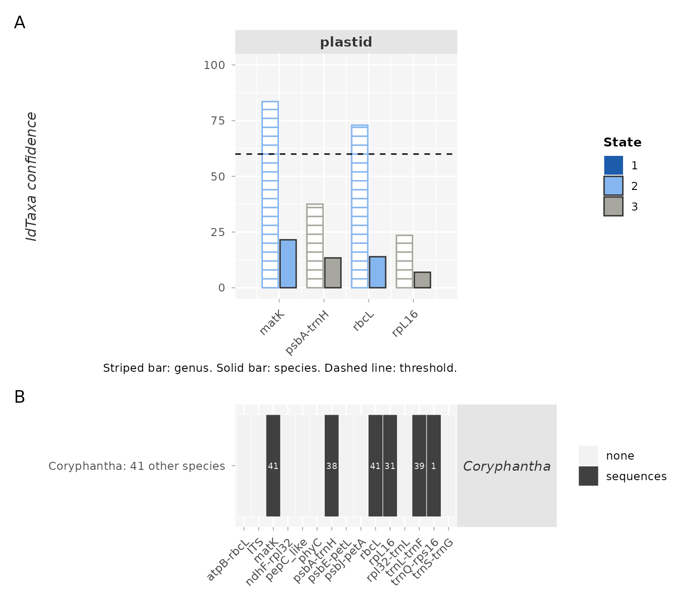
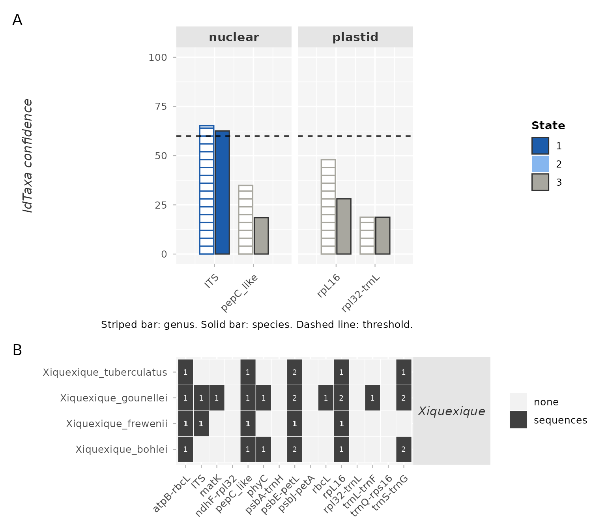
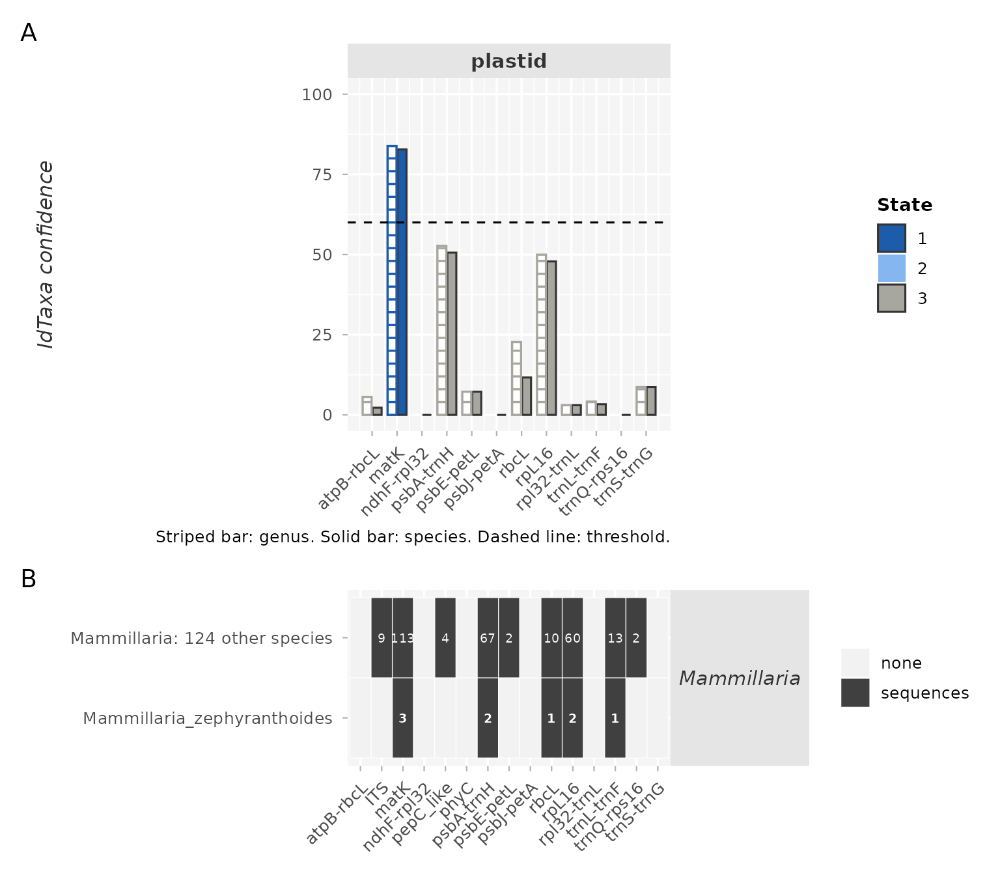
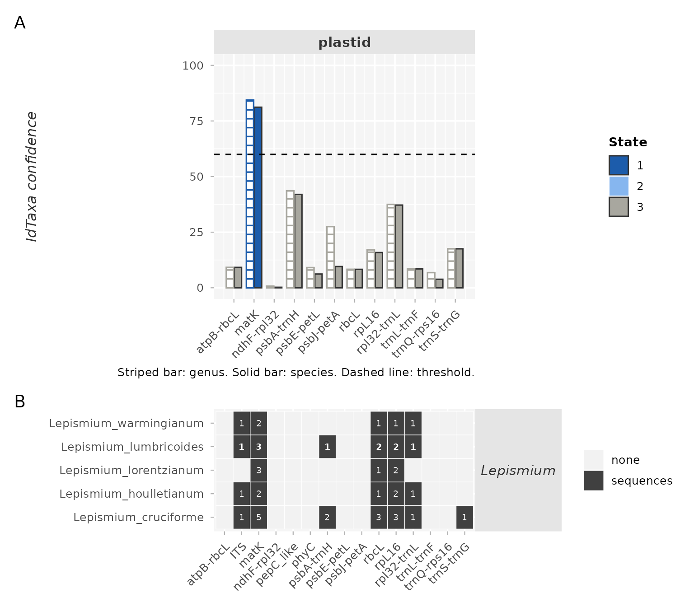
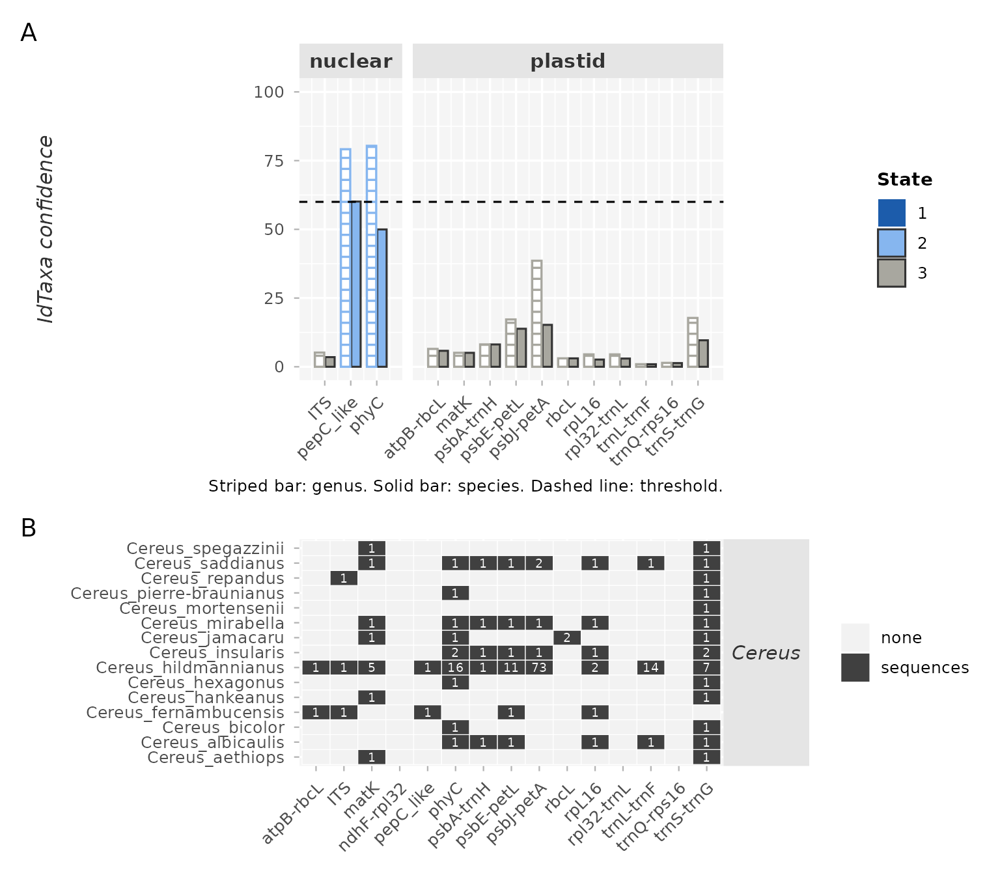
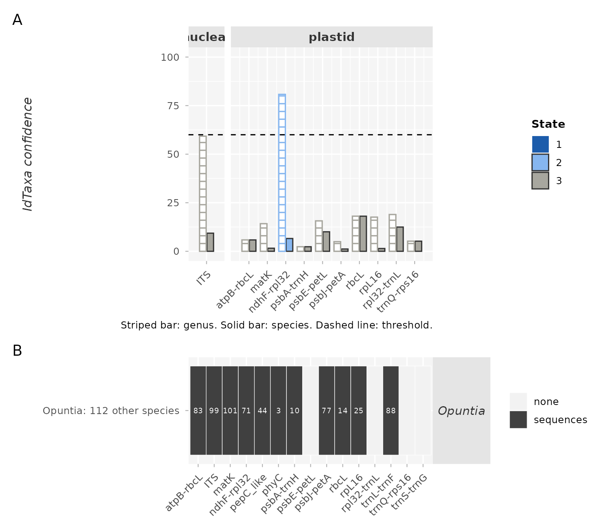
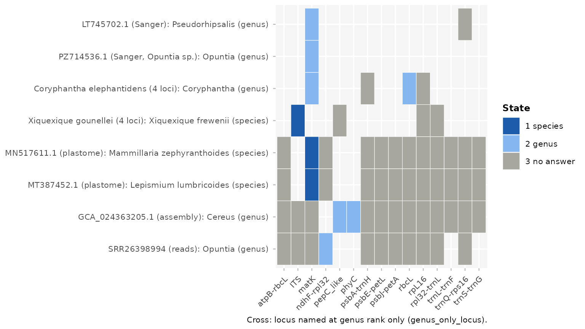

Tutorial 6: Identifying a Sample
Beatriz M. Meriño
2026-10-16
Source:vignettes/tutorial-6-cactus-barcoding-identification.Rmd
tutorial-6-cactus-barcoding-identification.RmdAbstract
Tutorial 5 builds the reference library of 15 loci and validates it. This tutorial uses that library to identify samples: one worked example for each kind of input the package accepts, all of them public records that are not in the library, so that each answer is what a user would get for a sample of their own.
Each example has three parts:
-
Download. The record is fetched from its public
source (GenBank, NCBI Assembly or ENA) into a folder
examples/. - Identification. The function of the package is called with the path of the file, as for any sample.
-
Result. The answer per locus, drawn with
plot_barcoding_identification(), one line of reading, and a link to the full HTML report.
The reports on the website were written from the tables of the
identification runs, made before the version number of the package was
set to 0.5.0: their provenance table gives 0.4.5.9000, the
number the package carried when the samples were identified, and their
footer gives 0.5.0, the version that wrote the page.
The script tutorial-6-cactus-barcoding-identification.R
runs all of it from the tutorial folder:
file.edit(system.file("scripts", "tutorial-6-cactus-barcoding-identification.R", package = "PhyloCactus"))The figures on this page are drawn from the answer tables of these
examples, distributed with the package in inst/extdata; the
script draws the same figures from your own run.
Before You Start
-
The library of Tutorial 5, in the same tutorial
folder:
11_barcoding/4_library/(step 4),11_barcoding/9_threshold/(step 9) and11_barcoding/11_metrics/(step 10). -
rentrez, for the GenBank downloads. -
minimap2andsamtoolsfor the assembly,fastpand GetOrganelle (with its seed databasesembplant_ptandembplant_nr) for the reads. If they live in a conda environment, activate it in the terminal before starting R there.
Reading an Answer
Every locus of the library is looked for in the sample and answered on its own, in one of three states:
- State 1, species. IdTaxa names a species and its species confidence reaches the species threshold of the locus (set in step 9 of Tutorial 5 from the validation queries whose species was absent from the library).
-
State 2, genus. The genus confidence reaches 60. A
species reached under the species threshold is kept as an alternative,
never assigned, with reason
below_species_threshold.rbcLanswers at genus rank only in this version (reasongenus_only_locus, argumentgenus_only_loci): on the library of this version its species answers were right in 11 of 34. -
State 3, no answer, with its reason:
no_overlap(the locus is not in the sample),short_overlap, orlow_confidence.
Loci are never combined into one verdict. When several loci answer,
the report shows whether they agree; when they name different taxa, the
answer of the sample is a conflict. A region identical to library
sequences is reported in identical_to_library, so that the
records behind a confident answer can be checked.
Example 1. One Sanger Record
LT745702.1, matK of Pseudorhipsalis
amazonica subsp. panamensis. The record is named at
subspecies rank, so the mining of Tutorial 1 left it out; the library
holds its binomial.
# Download (GenBank, 1 record)
writeLines(rentrez::entrez_fetch("nuccore", id = "LT745702.1", rettype = "gb", retmode = "text"),
"examples/LT745702.1.gb")
identify_barcoding_query("examples/LT745702.1.gb", run_name = "LT745702.1")
Figure 1. Answer of the Sanger record LT745702.1. IdTaxa confidence of each locus found, at genus rank (striped bar) and species rank (solid bar), coloured by state (dark blue, species; light blue, genus; grey, no answer), with the threshold as a dashed line; below, the species of the named genus in the library and their sequences per locus.
Reading. matK names the genus
Pseudorhipsalis. IdTaxa reached the right species, P.
amazonica, with a species confidence of 61.6, under the species
threshold of matK (66.9): the species is listed as an
alternative (below_species_threshold), not assigned.
trnQ-rps16 overlaps too little
(short_overlap). Full
report.
Example 2. A Specimen of Unknown Species
PZ714536.1, matK of Opuntia sp.,
published after the mining of Tutorial 1.
writeLines(rentrez::entrez_fetch("nuccore", id = "PZ714536.1", rettype = "gb", retmode = "text"),
"examples/PZ714536.1.gb")
identify_barcoding_query("examples/PZ714536.1.gb", run_name = "PZ714536.1")
Figure 2. Answer of the Sanger record PZ714536.1 (Opuntia sp.). IdTaxa confidence of each locus found, at genus rank (striped bar) and species rank (solid bar), coloured by state (dark blue, species; light blue, genus; grey, no answer), with the threshold as a dashed line; below, the species of the named genus in the library and their sequences per locus.
Reading. Opuntia at genus rank (genus confidence 79.2). The region is identical to 17 library records of several species of Opuntia, so no species can be told apart at this locus. Full report.
Example 3. One Specimen, Four Loci
Coryphantha elephantidens subsp. bumamma, voucher
Vázquez 2628: OK340410.1, OK340349.1,
OK340287.1, OK340224.1. Given with
sample =, the four records are one sample, read together in
one report.
writeLines(rentrez::entrez_fetch("nuccore", id = c("OK340410.1", "OK340349.1", "OK340287.1", "OK340224.1"),
rettype = "gb", retmode = "text"), "examples/OK340410.1_specimen.gb")
identify_barcoding_query("examples/OK340410.1_specimen.gb", sample = "Coryphantha_elephantidens_bumamma",
run_name = "OK340410.1")
Figure 3. Answer of the specimen of Coryphantha elephantidens subsp. bumamma (four loci). IdTaxa confidence of each locus found, at genus rank (striped bar) and species rank (solid bar), coloured by state (dark blue, species; light blue, genus; grey, no answer), with the threshold as a dashed line; below, the species of the named genus in the library and their sequences per locus.
Reading. matK and rbcL
name Coryphantha; rpL16 and psbA-trnH
give no answer (low confidence). The two loci that answer agree, and the
sample is answered at genus rank. Full
report.
Example 4. One Specimen, Four Loci, and a Wrong Species
Xiquexique gounellei: OP189074.1,
OP188885.1, OP188764.1,
OP187233.1.
writeLines(rentrez::entrez_fetch("nuccore", id = c("OP189074.1", "OP188885.1", "OP188764.1", "OP187233.1"),
rettype = "gb", retmode = "text"), "examples/OP189074.1_specimen.gb")
identify_barcoding_query("examples/OP189074.1_specimen.gb", sample = "Xiquexique_gounellei", run_name = "OP189074.1")
Figure 4. Answer of the specimen of Xiquexique gounellei (four loci). IdTaxa confidence of each locus found, at genus rank (striped bar) and species rank (solid bar), coloured by state (dark blue, species; light blue, genus; grey, no answer), with the threshold as a dashed line; below, the species of the named genus in the library and their sequences per locus.
Reading. ITS names Xiquexique
frewenii with a species confidence of 62.5, just over its species
threshold (60.9); the other three loci give no answer. A species named
by one locus, close to its threshold, with every other locus silent, is
the pattern of most wrong species of this version: read it as the genus
until another locus agrees. Full
report.
Example 5. A GenBank Plastome Named to Species
MN517611.1, the plastome of Mammillaria
zephyranthoides. A GenBank flat file is read as such; each locus is
cropped from the plastome.
writeLines(rentrez::entrez_fetch("nuccore", id = "MN517611.1", rettype = "gb", retmode = "text"),
"examples/MN517611.1.gb")
identify_barcoding_query("examples/MN517611.1.gb", run_name = "MN517611.1")
Figure 5. Answer of the plastome MN517611.1. IdTaxa confidence of each locus found, at genus rank (striped bar) and species rank (solid bar), coloured by state (dark blue, species; light blue, genus; grey, no answer), with the threshold as a dashed line; below, the species of the named genus in the library and their sequences per locus.
Reading. matK names Mammillaria
zephyranthoides (82.8 against 66.9), among the species of
Mammillaria of its library; the other loci found give no
answer. Full
report.
Example 6. A GenBank Plastome Named as Another Species
MT387452.1, the plastome of Rhipsalis
teres.
writeLines(rentrez::entrez_fetch("nuccore", id = "MT387452.1", rettype = "gb", retmode = "text"),
"examples/MT387452.1.gb")
identify_barcoding_query("examples/MT387452.1.gb", run_name = "MT387452.1")
Figure 6. Answer of the plastome MT387452.1. IdTaxa confidence of each locus found, at genus rank (striped bar) and species rank (solid bar), coloured by state (dark blue, species; light blue, genus; grey, no answer), with the threshold as a dashed line; below, the species of the named genus in the library and their sequences per locus.
Reading. matK names Lepismium
lumbricoides (81.2 against 66.9): the region is identical to
FN669720.1, a record under that name
(identical_to_library). An identical sequence under another
name, a misidentified voucher or a haplotype shared across genera,
yields a confident wrong answer; the report lists the record so that it
can be checked. Full
report.
Example 7. Several Samples at Once
A sample sheet has one row per sample: sample_id,
input_type (a row of the matrix of accepted inputs,
barcoding_accepted_inputs.csv), file_1, and
optionally file_2, declared_species and
voucher. Each sample is routed to its function and gets its
report; one index table gathers them.
sheet <- data.frame(sample_id = c("LT745702.1", "PZ714536.1", "MN517611.1"),
input_type = "genbank",
file_1 = c("examples/LT745702.1.gb", "examples/PZ714536.1.gb", "examples/MN517611.1.gb"),
declared_species = c("Pseudorhipsalis amazonica", "", "Mammillaria zephyranthoides"))
utils::write.csv(sheet, "examples/samples.csv", row.names = FALSE)
identify_barcoding_samples("examples/samples.csv")The index,
11_barcoding/10_identify/samples/TABLE_barcoding_samples_index.csv,
compares each answer with the declared species:
species agrees, genus agrees,
disagrees, not assigned, or
not declared when the sheet gives none. The three samples
are the records of Examples 1, 2 and 5, and their answers per locus are
the figures of those examples; what the sheet adds is the index:
| Sample | Loci found | State 1 | State 2 | State 3 | Genera named | Species named | Declared species | Answer vs declared |
|---|---|---|---|---|---|---|---|---|
| LT745702.1 | 2 | 0 | 1 | 1 | Pseudorhipsalis | Pseudorhipsalis amazonica | genus agrees | |
| PZ714536.1 | 1 | 0 | 1 | 0 | Opuntia | not declared | ||
| MN517611.1 | 12 | 1 | 0 | 11 | Mammillaria | Mammillaria zephyranthoides | Mammillaria zephyranthoides | species agrees |
Reading. LT745702.1 names the genus
Pseudorhipsalis and its declared species is not reached
(genus agrees). PZ714536.1 names
Opuntia and declares no species (not declared).
MN517611.1 names Mammillaria zephyranthoides at
one of its 12 loci found (species agrees). The sheet gives
no voucher, so voucher_missing is TRUE in the
three rows: a sample without a voucher is identified and flagged, since
the leakage rule per specimen cannot be applied to it (its report says
so).
Example 8. A Genome Assembly
GCA_024363205.1, Cereus fernambucensis (NCBI
Assembly, about 0.9 Gb). The loci of the library are mapped onto the
assembly with minimap2 and cut with
samtools.
s <- rentrez::entrez_summary("assembly", rentrez::entrez_search("assembly", "GCA_024363205.1[Assembly Accession]")$ids[1])
ftp <- sub("^ftp://", "https://", s$ftppath_genbank) # https://ftp.ncbi.nlm.nih.gov/genomes/all/GCA/024/363/205/...
asm <- file.path("examples", paste0(basename(ftp), "_genomic.fna.gz"))
utils::download.file(paste0(ftp, "/", basename(ftp), "_genomic.fna.gz"), asm, mode = "wb")
identify_barcoding_assembly(asm, run_name = "GCA_024363205.1")
Figure 7. Answer of the assembly GCA_024363205.1. IdTaxa confidence of each locus found, at genus rank (striped bar) and species rank (solid bar), coloured by state (dark blue, species; light blue, genus; grey, no answer), with the threshold as a dashed line; below, the species of the named genus in the library and their sequences per locus.
Reading. Cereus at genus rank from
pepC_like (its best species at 61.5, under the species
threshold of 78.8) and phyC; 12 other loci give no answer.
rpl32-trnL hits two scaffolds with a low mapping quality,
which the package reports; the best hit is kept. Full
report.
Example 9. Paired Illumina Reads
SRR26398994, a genome skim of Opuntia
comonduensis (ENA, about 0.56 GB). The plastome and the nuclear
ribosomal DNA are assembled with fastp and GetOrganelle,
then identified locus by locus. The species is not in the library.
ena <- utils::read.delim(paste0("https://www.ebi.ac.uk/ena/portal/api/filereport?accession=SRR26398994",
"&result=read_run&fields=fastq_ftp,fastq_md5&format=tsv"), colClasses = "character")
urls <- paste0("https://", strsplit(ena$fastq_ftp, ";")[[1]])
fq <- file.path("examples", basename(urls))
for (k in 1:2) utils::download.file(urls[k], fq[k], mode = "wb")
stopifnot(unname(tools::md5sum(fq)) == strsplit(ena$fastq_md5, ";")[[1]])
identify_barcoding_reads(fq[1], fq[2], run_name = "SRR26398994", threads = 4)
Figure 8. Answer of the reads SRR26398994. IdTaxa confidence of each locus found, at genus rank (striped bar) and species rank (solid bar), coloured by state (dark blue, species; light blue, genus; grey, no answer), with the threshold as a dashed line; below, the species of the named genus in the library and their sequences per locus.
Reading. Opuntia at genus rank from
ndhF-rpl32; the other ten loci found give no answer. For a
species absent from the library, the genus is the right answer. Full
report.
The Examples Side by Side

Figure 9. The answers of the eight examples with a
figure, side by side: one row per example and one column per locus
found, coloured by state; a cross marks a locus named at genus rank only
(genus_only_locus).
A plastome or an assembly holds most loci of the library, a Sanger record one; yet in these examples the answer rests on one or two loci in every case, and most loci found give no answer.
How Well This Version Identifies
The rates below were measured with the library of this version, built
from GenBank alone on 2026-10-13, with the species thresholds of step 9
and rbcL at genus rank only. They belong to this library:
as GenBank enriches it, they are measured again and are expected to
change.
Outcomes, in the order species correct / genus correct / no answer / conflict / wrong species / wrong genus (number of queries). A species is “present” when the library holds it once the records of the query’s own specimen are set aside.
| Input | Unit | Species present | Species absent |
|---|---|---|---|
| One Sanger record of the library, own specimen set aside | locus | 148 / 402 / 1738 / n.a. / 14 / 2 (2304) | 0 / 252 / 2173 / n.a. / 45 / 37 (2507) |
| Sanger records of one GenBank specimen | specimen | 6 / 52 / 99 / 0 / 1 / 0 (158) | 0 / 22 / 19 / 0 / 1 / 0 (42) |
| GenBank plastome | plastome | 3 / 51 / 26 / 1 / 1 / 11 (93) | 0 / 2 / 0 / 1 / 0 / 1 (4) |
| Illumina reads (genome skims) | run | 1 / 2 / 1 / 0 / 0 / 0 (4) | 0 / 1 / 2 / 0 / 0 / 0 (3) |
Records from outside the library are a harder query than library
records with their own specimen set aside. Of 94 Sanger records from
outside the library (named at subspecies or variety, or with no species
name, so left out of the mining), identified one by one, none was named
at species rank: 48 were answered at the right genus and 46 not at all
(5 with no locus found). Where IdTaxa reached the right species, it did
so under the species threshold (below_species_threshold),
as in example 1. Of 23 specimens with several of these records, 17 were
answered at the right genus, 5 not at all, and 1 at a wrong species
(example 4).
The genus is the answer to expect from this version. A species is
named rarely, mostly from matK and from plastomes;
abstention is the most common answer, and a wrong species is rare but
possible.
Limitations
- Coverage of the library. A sample of a species absent from a locus library can only be named as something else at that locus, or not at all. The library holds part of the accepted species of the checklist of Korotkova et al. (2021), unevenly across loci; Tutorial 5 draws its taxonomic coverage.
-
Shared sequences. Identical sequences under
different names (shared haplotypes, misidentified vouchers) give
confident wrong answers;
identical_to_librarynames them. - Thresholds. The species thresholds come from the validation of the library; a species named close to its threshold by one locus deserves the caution of example 4.
References
- Korotkova et al. 2021. Cactaceae at Caryophyllales.org - A dynamic online species-level taxonomic backbone for the family. Willdenowia, 51(2), 251–270. https://doi.org/10.3372/wi.51.51208
- Murali et al. 2018. IDTAXA: a novel approach for accurate taxonomic classification of microbiome sequences. Microbiome, 6. https://doi.org/10.1186/s40168-018-0521-5
Continue to Tutorial 7: Core Pipeline Functions and Methodological Dictionary